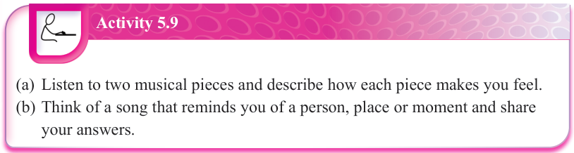
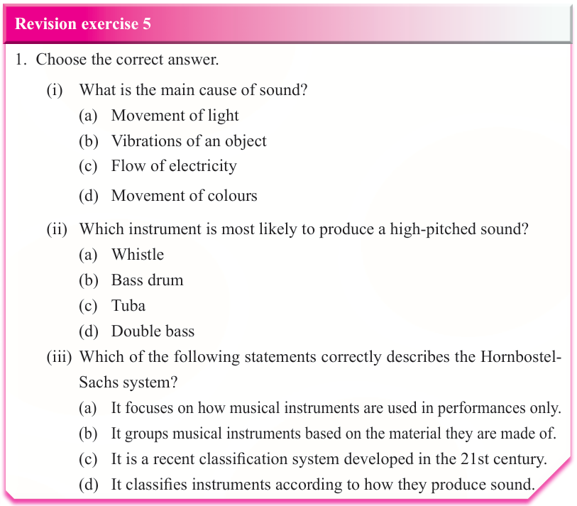

showing that music is not just natural but also a product of human creativity.
For example, in Western music, there are 12 tones in an octave.
In Indian and Arabic music, there are more than 12 tones.
Similarly, some societies focus on complex rhythms, while others focus on simple rhythms.
Music is also used in different cultural contexts, such as religious ceremonies, storytelling and social events.
Studies have shown that music reflects the values and history of a society.

Activity 5.9
(a) Listen to two musical pieces and describe how each piece makes you feel.
(b) Think of a song that reminds you of a person, place or moment and share your answers.

Revision exercise 5
1.
Choose the correct answer.